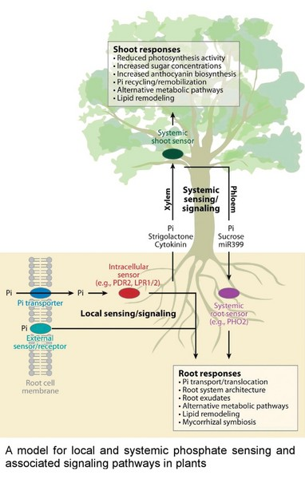
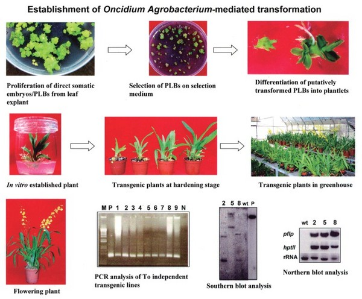

植物環境逆境研究
農業正面臨氣候變遷、資源枯竭、可耕地減少等因素的嚴峻考驗。由於環境逆境為農業損失最大的因素，尤其在這環境變遷的時代，為了確保永續發展及進而提升農業生產力，瞭解植物對環境逆境的因應之道，成為極重要的研究課題。面對這樣的趨勢，農生中心成立了「植物環境逆境研究專題」，企圖以整合跨領域的資源、技術和設備投入基礎研究，來探討植物對環境逆境的因應機制，以提供先進知識作為改善作物抗逆境能力的基 石，進一步發展應用生物尖端科技。 我們以水稻、番茄、蘭花或其它重要作物為主要標的作物，以阿拉伯芥為輔助模型植物，來研究植物受逆境誘導的基因調控與抗逆反應；以基因體、蛋白質體和生物資訊學等研究系統，使用 DNA 晶片、高通量核酸序列分析和質譜儀等先進實驗工具，來找尋與環境逆境相關的基因群。並進一步以遺傳學及轉基因方法，闡釋其功能、評估其應用價值等。目前我們正針對數種非生物性及生物性逆境，如乾旱、高鹽、高低溫度、淹水、缺磷及重金屬污染等環境因子，由本組相關的實驗室分工合作，積極從事整合型之研究計畫。我們期望研究成果可提供新知，並發展出增進作物適應氣候變遷或環境逆境能力的策略與方法。 另外，本中心也建立特殊作物基因轉殖研究組，進一步研究有效的耐逆境的基因群，針對改善台灣農業相關的問題，讓農業生產更加環保，農產品之產量、品質及附加價值均得以提升。

